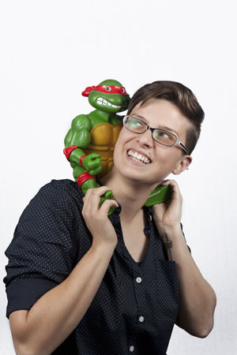

Austin Scott
Coding and Cooking are my passion. I can share my stories and recipes through the digital media I create.
Brendon Pierson
Former science teacher, used coding to grade work, realized he likes coding way more than teaching, thanks to NSS lives happily ever after.
Brittney Corona
I love designing programs that are useful and inspiring. When I'm not busy reading, I enjoy spending time with my friends and family.
Caitlin Stein
I'm a full-stack software developer. Learning, playing, and making are my passions, but I promise I'm still an adult. I love spending time with my family, knitting, and distance running.
Dan Hodges
Creative thinker, team player, and problem solver. Loves investigating vintage guitar amps and escaping from city life via kayak.
Daniel Cossins
I love soving complex problems and building applications from the ground up. On the side, I enjoy martial arts and water sports.
Deric Bunch
Background in biology and chemistry. Enjoy the critical thinking of development and the aesthetics of design in the coding world. Passionate about drumming, video gaming, and Kentucky Basketball.
Jeremy Grondahl
Creative & hard-working. I enjoy working with others, learning new technologies, volunteering, and problem solving. I love to write short-stories, create songs, code and spend time with my wife.
Jesse Turner
After 15 years in manufacturing management I'm leaping into my next challenge using my skills in efficiency, creativity, organization, continuous improvement & problem solving.
Juan Rodriguez
I'm always trying to incorporate my creative instincts in an effective and efficient manner - online and offline. When I'm not working, I'm in the kitchen perfecting my salsa recepe.
Lynn Samuelson
A science nerd through and through, I am passionate about approaching problems from multiple angles and learning everything.
Mary Kergosien
As an RN trained as a developer, I hope to improve the state of healcare solutions. I'm a geek who loves board games, hosting events, and taking on leadership roles in the community.

Rachel Morgan
Hardworking individual who thrives in a fast-paced environment, enjoys speaking fluent sarcasm and has a small obsession with TMNT.
Richard Aites
Thrilled every time an idea works! Writing some code that does what I intended never fails to inspire a desire to write more code. I also enjoy motorcycling, tennis with my wife, and family time at the beach.
Robin Burton
Radiology Technologist with 10 years of healthcare experience. Passionate about breast cancer research and awareness. Very excited to use new programming skills to merge prior experience with the IT field.
Ryan Tanay
With a background in digital art computer hardware and networking I'd dabbled in code before NSS. Nothing beats the satisfaction of learning a new technique or technology and using it to solve the problem at hand.
Sally Fisher
Emerging web developer, experienced problem solver. Some of my favorite things include AngularJS, cats, and protein folding.
Seth Dorris
Former Active Duty Army Captain turned Software Developer. I love C#/.NET, my two french bulldogs (Pig and Bentley), football and working out.
Shelley Davis-Wise
Detailed thinker and planner. I look forward to using my communication skills toward the development of thoughtful, useful and elegant software solutions. I believe excellence lies in the intersection of beauty and utility.
Taylor Miley
A swim coach turned coder. In my spare time you can find me playing video games or tinkering with the games' user interfaces.
Tom Griffey
Rock 'n roll in human form. Music tech enthusiast and musician who eats new technologies for breakfast. Also passionate about education, civic hacking and youth development through the arts.
Wayne Hutchinson
I love to play drums, guitar, and piano. Anxious to start my new career as a software developer!